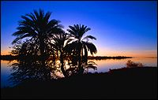

|
The Nile river was the centre of life in ancient Egypt. It provided the ancient Egyptians with food and water as well as a way to transport goods and people across long distances. Every year, the combination of melting snow and heavy rains in the southern mountains increased the amount of water being channelled into the Nile. This extra water made the Nile overflow and flood its banks.
The flood waters covered the fertile land where the ancient Egyptians grew crops, making farming impossible. But within a few months, the flood waters would recede, leaving the fields ready for ploughing and planting again.
|